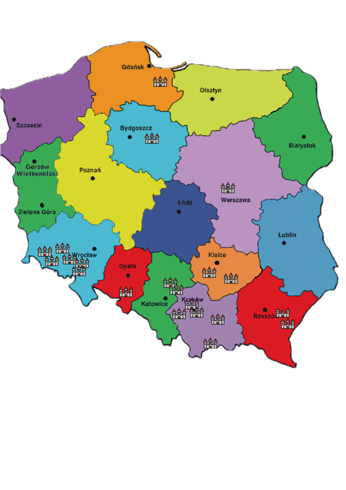

Zamki w Polsce
Zamki w Polsce to nie lada gratka i atrakcja podczas wakacyjnych oraz weekendowych wojaży. Mamy to szczęście, że w polskiej krainie można odnaleźć całkiem zgrabną ilość warowni. Często działają jak magnes! Bo któż z nas nie lubi zapuszczać się na zamkowe mury, aby wysłuchiwać barwnych legend i historii minionych dziejów. Zapraszamy zatem do naszej listy najpiękniejszych i najsłynniejszych zamków w Polsce.
Chcesz mieć swój wkład w rozwój społeczności miłośników polskich zamków?
Wypełnij poniższy formularz i daj nam znać, który Zamek odwiedzisz jako następny:
